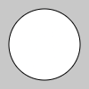
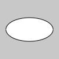
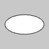

Examples

function setup() {ㅤㅤcreateCanvas(100, 100);
ㅤㅤbackground(200);
ㅤㅤellipse(50, 50, 80, 80);
ㅤㅤdescribe('A white circle on a gray canvas.');}

function setup() {ㅤㅤcreateCanvas(100, 100);
ㅤㅤbackground(200);
ㅤㅤ ellipse(50, 50, 80);
ㅤㅤdescribe('A white circle on a gray canvas.');}

function setup() {ㅤㅤcreateCanvas(100, 100);
ㅤㅤbackground(200);
ㅤㅤellipse(50, 50, 80, 40);
ㅤㅤdescribe('A white ellipse on a gray canvas.');}

function setup() {ㅤㅤcreateCanvas(100, 100, WEBGL);
ㅤㅤbackground(200);
ㅤㅤellipse(0, 0, 80, 40);
ㅤㅤellipse(0, 0, 80, 40);}
function setup() {ㅤㅤcreateCanvas(100, 100, WEBGL);
ㅤㅤ// Use 6 vertices.ellipse(0, 0, 80, 40, 6);
ㅤㅤellipse(0, 0, 80, 40, 6);}